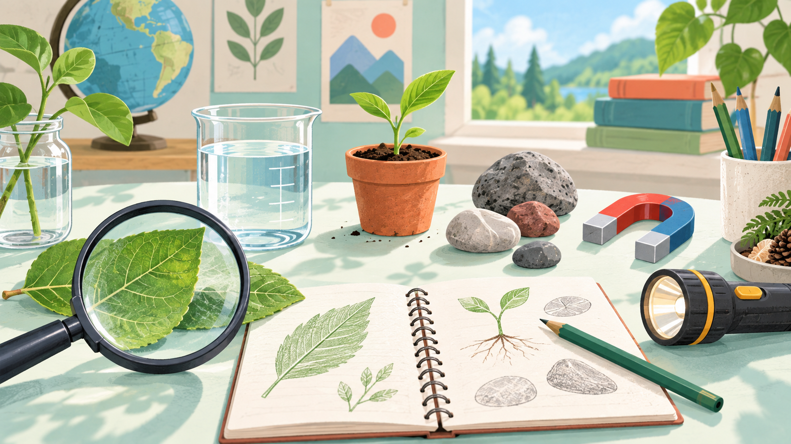

Your learning
Welcome, learner
0 activities complete
Offline learning kit
Independent learning
Choose a language, maths, or reading skill path. Your progress stays on this device so you can continue later.
Your learning
0 activities complete
Learning paths
Choose a subject to see its complete learning path and continue at your own pace.
Available now
Activities and progress work offline after the app has loaded.
In development
These are design proposals, not finished lessons yet.

Observation, simple experiments, and selected offline simulations.
Files, typing, documents, spreadsheets, and internet basics.
Learning activity
Open an activity to read it here.
Resource library
Browse free learning sources while online, then save useful files on the device for classes or home learning.
Offline setup
Prepare the browser app and external files while online. Then test everything once before using it with a learning group.
External links need internet. Download outside materials first, then use Teaching Desk to open the saved files during class.
Teaching desk
Select a batch, reuse saved teaching materials, and keep separate progress and notes for each class.
Class batches
Give each class a short, recognizable batch name.
Suggestions
0Completed
0Remaining
0Learners
-Use your own plan
Choose a PDF or image already saved on this device. Preview it for this class or save it in this browser for later offline use. It is not uploaded anywhere.
No file selected yet.
Select a saved PDF or image before class starts.
Device library
Saved files stay in this browser on this device. Clearing browser data removes them, so keep important originals elsewhere too.
Checking saved materials...
Class notebook
Record what went well, what was difficult, and what to review next.
Optional support
Use these when they are helpful, or continue with your own lesson plan.
Optional starter packs
Teachers can use a whole pack, choose one activity, or continue with their own material.
Home learning
Choose an age range and a suggested path. Activities are designed to be done together with everyday materials.
Current plan
You can change paths at any time.